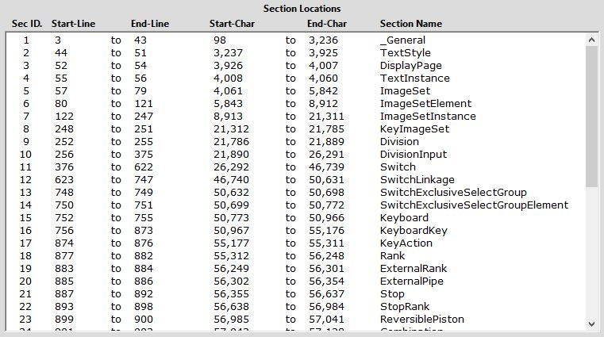

The Edit
Mode top-level menu item contains three sub-menu
choices:
ODF
Editing Enabled
ODF
Editing Disabled
List
Sections
The Edit
Mode menu item and its three sub-menu choices are
only enabled while an ODF is loaded. These items are each assigned
"Alt"-key accelerators, but do not implement "shortcuts".
When an ODF is first opened and loaded into AECHO's ODF Display Area,
the ODF display is made read-only. The user may freely navigate in
this area, may select blocks of text with the mouse, and may Copy
(Ctrl-C) these highlighted selections, to be pasted elsewhere.
However, typing or over-typing text into this area, Cutting
(Ctrl-X), Pasting (Ctrl-V), or deleting text is blocked. When in
read-only mode, the sub-menu item ODF Editing Disabled is
checked and disabled from selection: its counterpart, ODF Editing Enabled
is unchecked, but enabled for selection. When read-only, the Edit Mode
menu item appears with a normal Menu-Bar light-gray background.
Clicking ODF
Editing Enabled toggles the state, permitting
the user to freely edit the contents of the ODF Display Area.
Cutting, pasting, deleting text, and adding/changing text may now be
performed. The ODF
Editing Enabled choice is checked to show
that it is in-force, but is disabled from further selection, while
its counterpart ODF
Editing Disabled is unchecked but enabled for
selection. When transitioning from read-only to editable, AECHO
displays a warning message-box, and colors the Edit Mode
menu item with a red background to remind the user that they can now
edit the ODF.
List Sections
Scans the entire ODF, identifying the boundaries of each
Section it encounters. The results are presented in the Descriptive
Text Area, and may be viewed or
printed (menu > File > Print
Descriptive Text...). The content in this
area may also be selected and copied using standard mouse and
keyboard techniques, and can be pasted elsewhere, including into
other text-aware programs. The resulting list includes:
SectionID; Section Starting Line; Section Ending Line; Section
Starting Character Position; Section Ending Character Position;
Section Name. When printed, a header is generated that includes
the fully-qualified path and name of the ODF file; the date and
time; and column headers. The onscreen presentation is
scrollable.
Example:

Descriptive Text Area after menu >
Edit
Mode > List
Sections